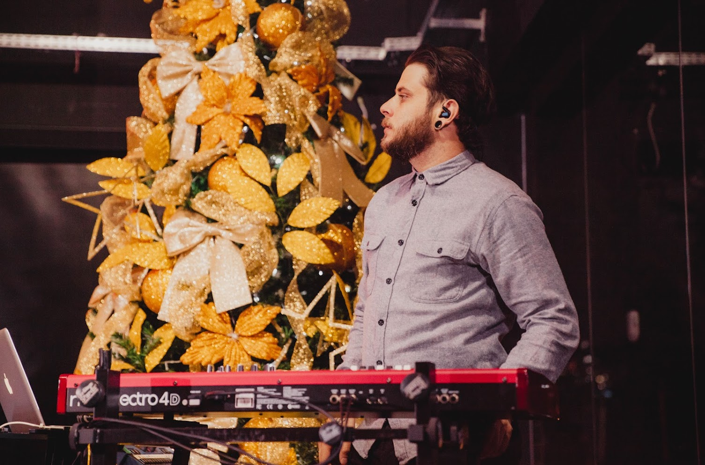
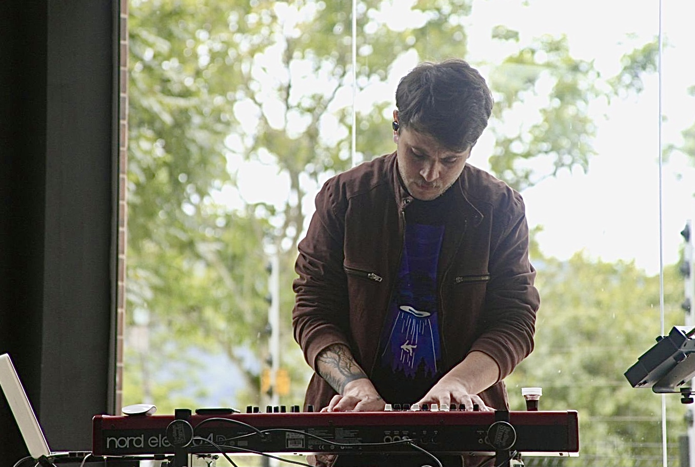
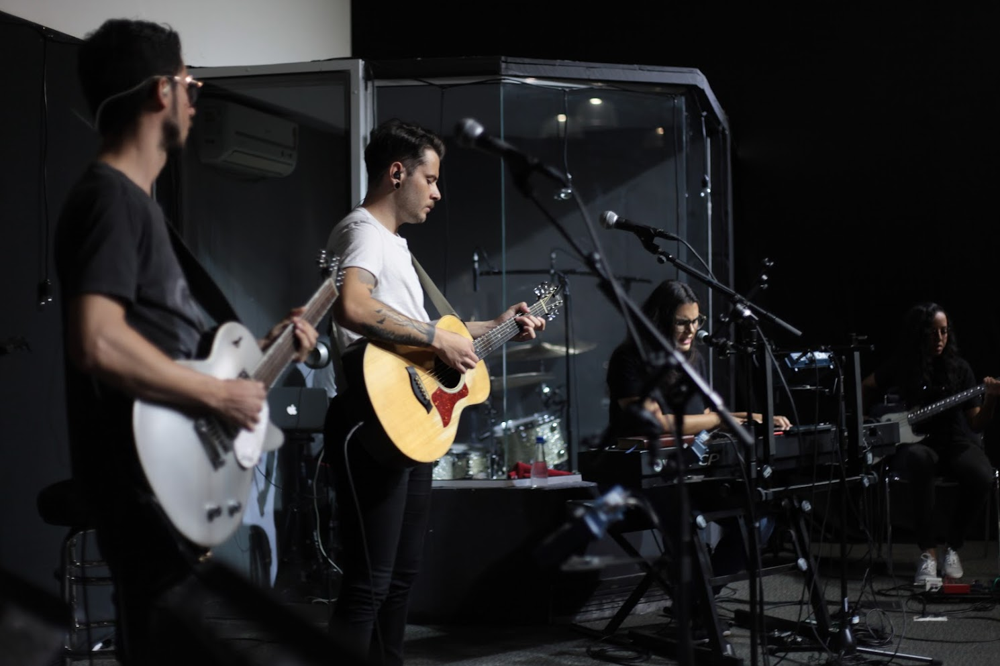
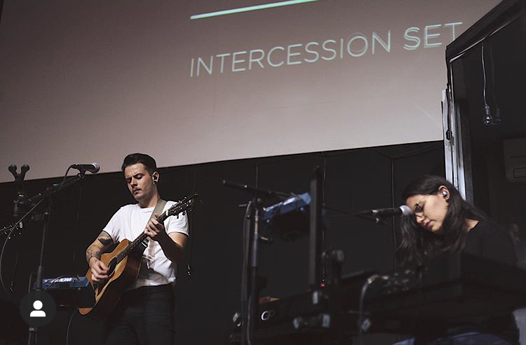
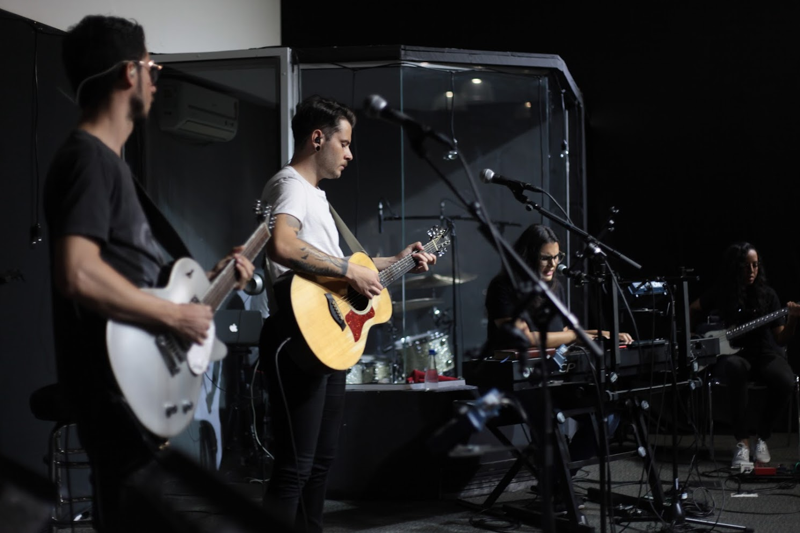
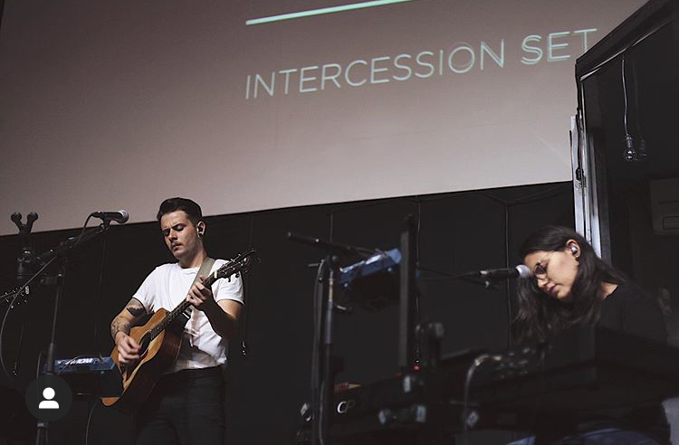
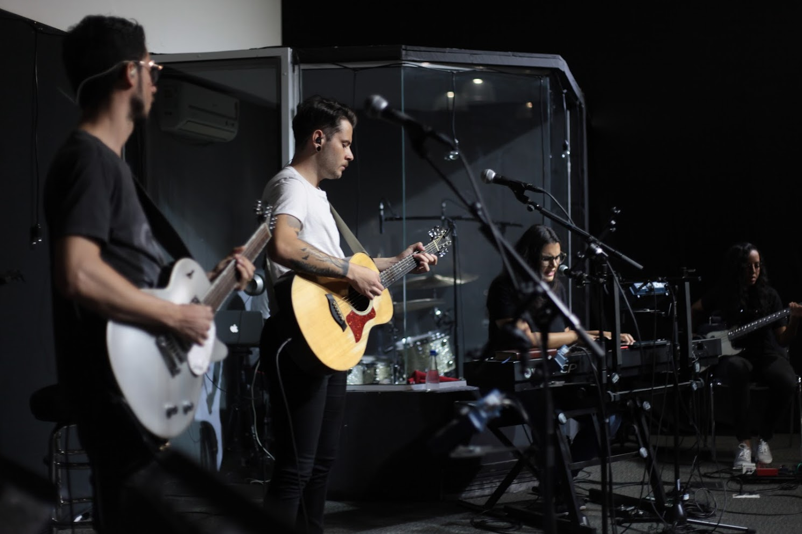
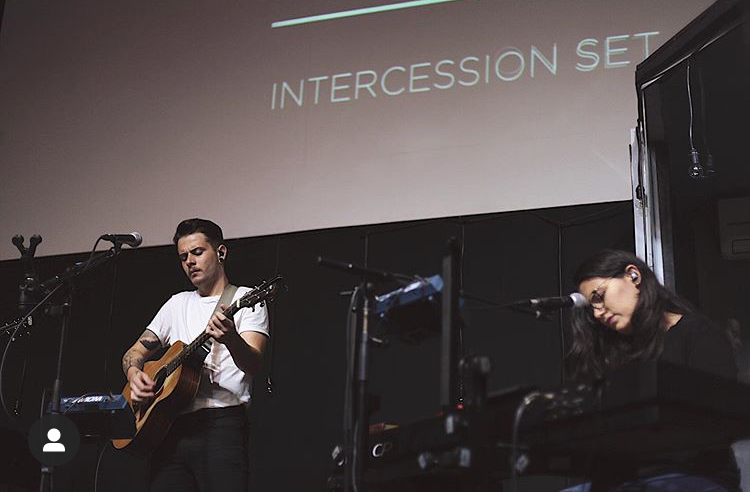
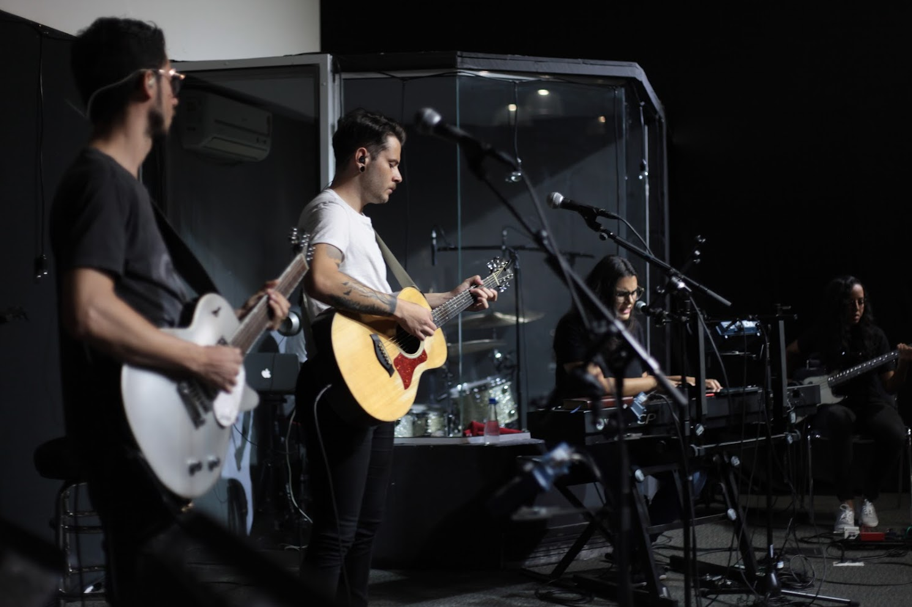
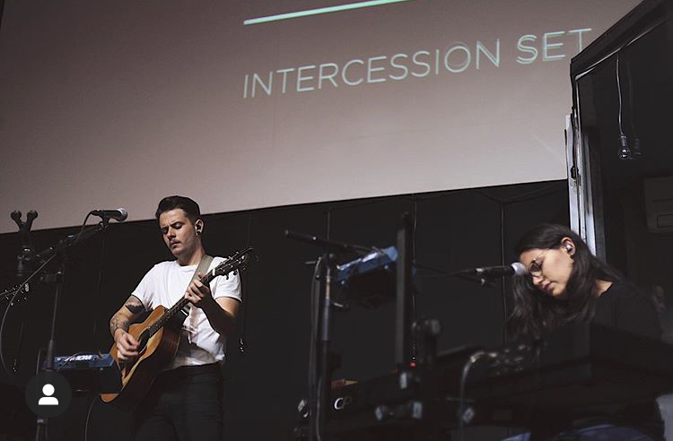

 







Marcos Roberto Grechaki é um jovem brasileiro, nascido no interior do Paraná, apaixonado por Jesus e amante da música. Em 2019, embarquei em uma jornada de fascinação por Cristo, que me levou a Florianópolis, onde tive a oportunidade de servir na sala de oração FHOP (Florianópolis House of Prayer).
Email: contato@marcosrobertogrechaki.com
Instagram: @grechakimarcos